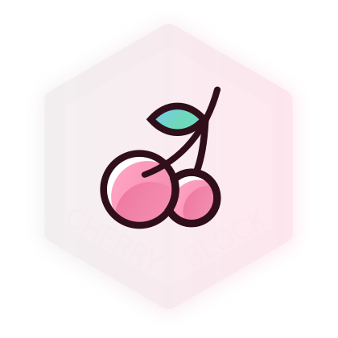
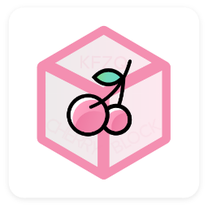

樱桃方块 APP 2.0
版本：2.0.0 Beta | 更新时间：2022年5月9日
轻量游戏资料库 Android APP。

CherryBlock 一款游戏《Minecraft》等游戏内容的资料库查询及阅读知识的轻量级 Android APP，集合了MC百科、Minecraft Wiki、神奇宝贝百科等资料库。可以帮助各类玩家突然想云某些东西的时候即时使用。
© Zijgame Studio
樱桃方块APP可快捷访问以下站点
使用 Material Design 2 材料设计风格
全新浏览引擎性能大幅提高，相比 0.1.12 旧版本阅读更流畅，使用更稳定。
现已支持夜间模式，暗光环境阅读更轻松。
版本：0.1.11.2 Lite | 更新时间：2020年5月9日
为低配用户打造，安装后存储占用相对低60%
支持Android 5.0及以上系统，安装包约2.5MB，可能会出现崩溃，常规机型建议使用标准版本
